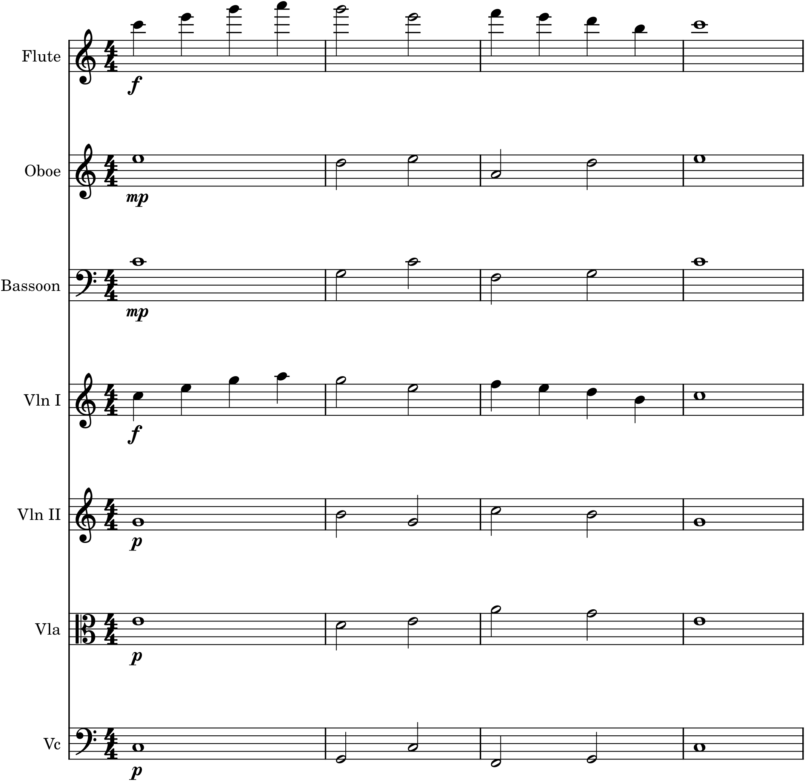

Here is the summit. Everything in this book — every clef and rhythm, every chord and cadence, every phrase, form, instrument, and colour — has been climbing toward one thing: writing real, complete music for a real ensemble, and hearing it played. The Capstone asks you to do exactly that. You will take a piece you have already composed and orchestrate it fully for a small orchestra, making, at every step, the deliberate choices of colour, texture, and balance that Part 7 has taught — and then you will write a short account of why you made them. It is the graduation exercise, and it is entirely within your reach, because you now hold every piece it requires.
The brief
Take one earlier piece of your own — the melody with accompaniment from Project 3, or (better) the ternary piece from Project 4 — and fully orchestrate it for a small orchestra (strings plus a handful of winds, from a MuseScore template). Decide who carries the melody in each passage, what to double and with what, how to voice and distribute the harmony, and how to balance it all so the right line is always in front. Vary the colour and texture to articulate the form. Then write a short analysis — a paragraph or two — explaining your main orchestration choices and why you made them. Save the score, play it back, and extract the parts.
C.1Choose the piece
Do not compose anything new; the Capstone is about orchestrating, and new composition would only get in the way. Reach for a piece you already know intimately. The ternary piece from Project 4 is the ideal choice, because its ABA form gives you something to articulate with colour: you can score the returning A differently from its first appearance, and give the contrasting B section its own instrumental world, so that the form becomes audible through orchestration (Chapter 35). If you prefer, the simpler Project 3 melody-with-accompaniment works just as well as a first orchestration. Either way, choose a piece whose notes you no longer have to think about, so that all your attention can go to colour.
We will follow the book’s running tune one last time — the little melody you first met in the Preface, harmonized in Project 2, given a piano accompaniment in Project 3, cast into ternary form in Project 4, and arranged for string quartet in Project 5. Now it takes the stage in full.
C.2Choose the ensemble
Pick a small orchestra and open the matching MuseScore template (Chapter 38), so the instruments arrive in standard score order, correctly clefed and transposed. A modest, manageable roster is all you need — the strings as a foundation, with a few woodwinds for colour and a bassoon to strengthen the bass. Resist the urge to use the largest orchestra you can; a well-handled chamber orchestra will teach you more, and sound better, than a big one used clumsily. Choose the forces, then compose with them.
C.3From quartet to orchestra
The heart of the work is turning the piece you have — here, the string-quartet arrangement of Project 5 — into a true orchestral score. Below is the running tune’s opening phrase, orchestrated.

Study Figure C.1 as the sum of everything. The melody is doubled across families — first violins plus flute an octave up — for brilliance and strength (Chapter 34), and marked f to stay in front (Chapter 37). The inner voices of the quartet are handed out among the winds and middle strings, each in a good register (Chapter 33) and marked softer so they support rather than compete. The bass gains a bassoon alongside the cellos, a characteristic orchestral reinforcement. Nothing has been recomposed; the tune, its harmony, and its bass are exactly what they have always been. What is new is the scoring — the choice of who plays what, in what colour, at what weight — and that scoring is orchestration.
C.4Make it a whole piece
The excerpt above is only the opening. To complete the Capstone, orchestrate the entire piece, and let the scoring do musical work across its whole span:
- Articulate the form. Score the return of the A section differently from its first statement — a new instrument on the melody, a fuller or thinner texture — so the ABA shape is heard as colour (Chapter 35). Give the B section its own instrumental character.
- Vary the texture. Do not keep one texture throughout; move between melody-and-accompaniment, fuller homophonic passages, and moments of contrast, so the piece breathes (Chapter 36).
- Save the tutti. Keep some instruments in reserve so that a full-orchestra moment means something; let players rest, and bring everyone in for the arrival.
- Balance every passage. Check, by ear, that the melody is always clearly on top and the low-middle never turns to mud (Chapter 37).
C.5Write the analysis
Finally — and this is essential — write a short analysis of your own choices. In a paragraph or two, explain: which instruments carry the melody where, and why; what you doubled and for what effect; how you distributed the harmony; how you kept the balance; and how you used colour and texture to bring out the form. This step matters as much as the scoring itself, because putting your decisions into words is what turns lucky instinct into understood craft — it forces you to know why a choice worked, so that you can make it again, deliberately, in the next piece. An orchestrator who can explain their score is an orchestrator who is learning.
Hear the colours
The whole point of orchestration is sound, so listen at every stage. Play the piece back after each decision — after doubling the melody, after distributing the harmony, after balancing — and ask whether you hear what you intended. Compare the orchestral version with the piano or quartet original you started from: the notes are the same, but the music is transformed, and hearing that transformation is hearing what you have learned to do. Then listen once more, purely for pleasure, to your own music played by an orchestra.
In MuseScore
The Capstone is a MuseScore project from start to finish, and the software makes every part of it achievable.
- Open a small-orchestra template (File ▸ New) so the score is correctly laid out, and toggle Concert Pitch on while you work (Chapter 32).
- Bring in your piece: copy the melody, bass, and inner voices from your quartet or piano original onto the appropriate staves, then begin reassigning and doubling — melody to the violins and a flute, bass to the cellos and bassoon, harmony across the middle, as in Figure C.1.
- Balance with written dynamics (melody f, accompaniment p) and the Mixer (F10); solo and mute parts to check each line.
- Play it back constantly with MuseSounds, revising by ear — the single most important habit of orchestration.
- Extract the parts (File ▸ Parts) when done, and MuseScore lays out a correct, transposed part for every player.
Done when…
- You have taken one earlier piece and fully orchestrated it for a small orchestra, from a template.
- The melody is clearly in front in every passage, doubled and balanced as needed.
- The harmony and bass are well distributed and voiced, with the low register kept clear.
- Colour and texture change across the piece to articulate its form.
- You have written a short analysis of your main choices and why you made them.
- You have played it back, revised by ear, saved the score, and extracted the parts — and heard your own music in orchestral colour.
You have reached the end. What began, in the Preface, as a single four-bar tune and a blank MuseScore document has become a piece of orchestral music, written by you, sounded by a whole orchestra — and, along the way, you have learned to read and write notation, to harmonize and shape a melody, to build a form, and to compose with the colours of the instruments themselves. There is far more music to write, and you will spend a lifetime writing it; but you now have the craft to begin, and the ear to guide you. Open a new score, and go on.